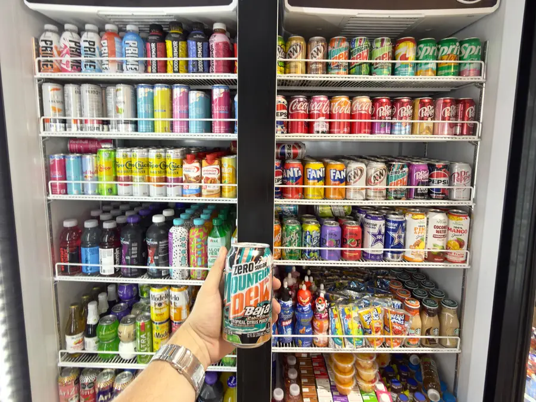
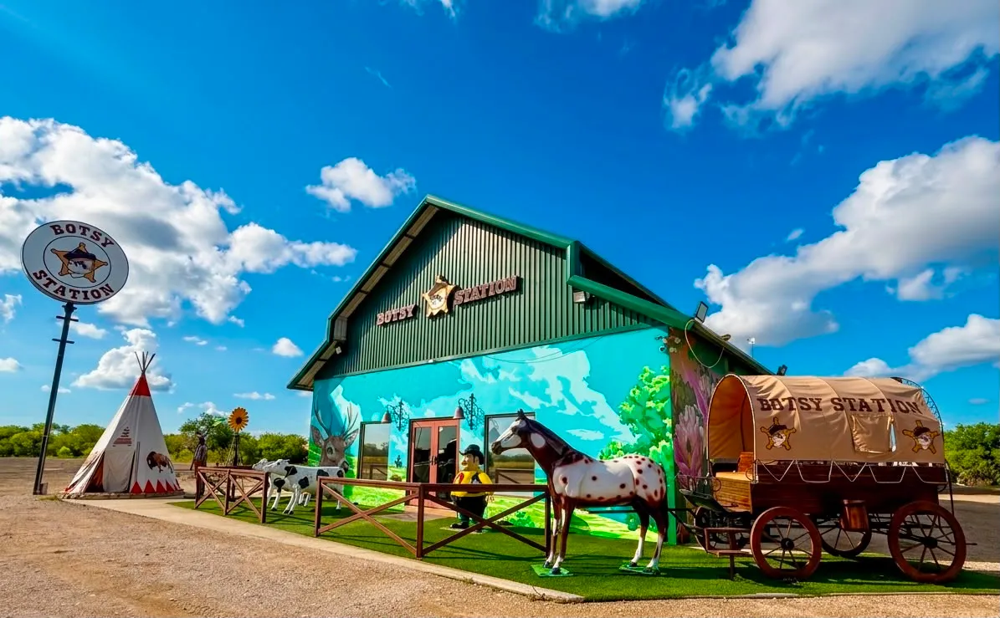
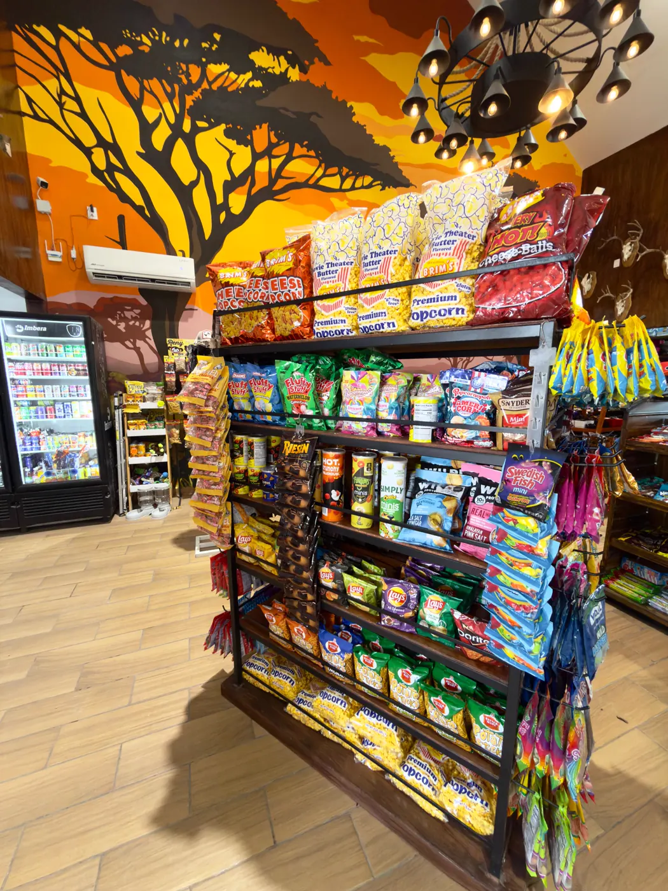
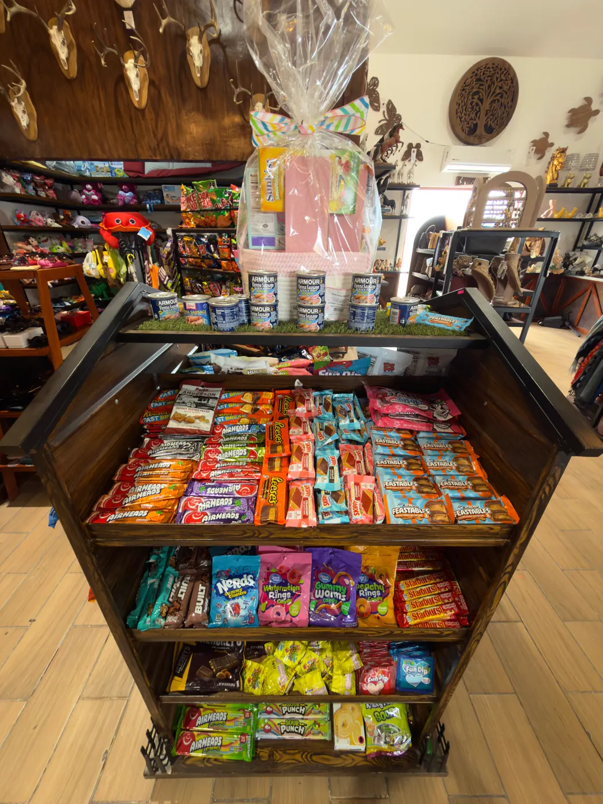
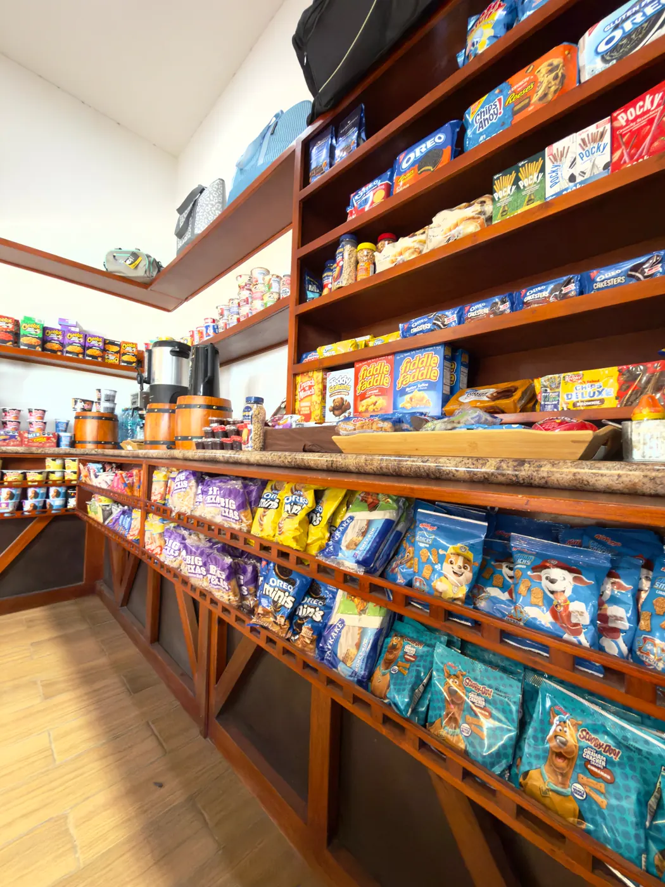
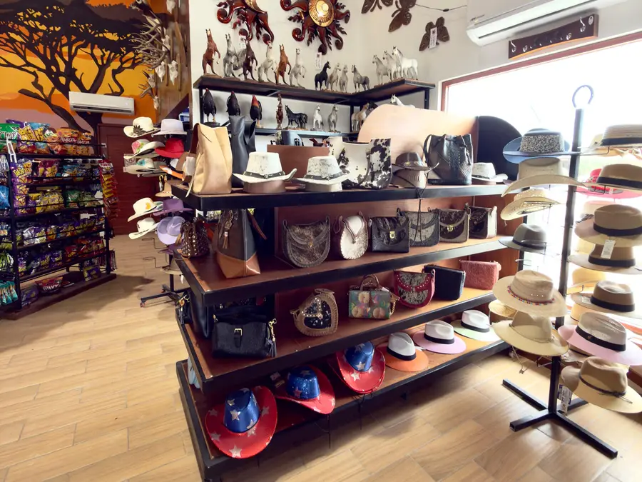
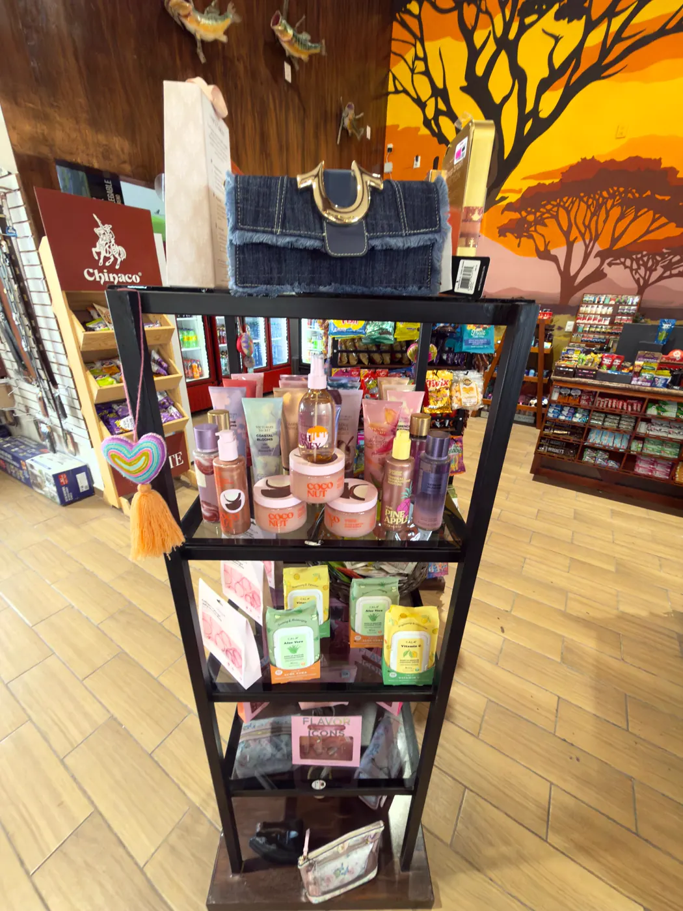
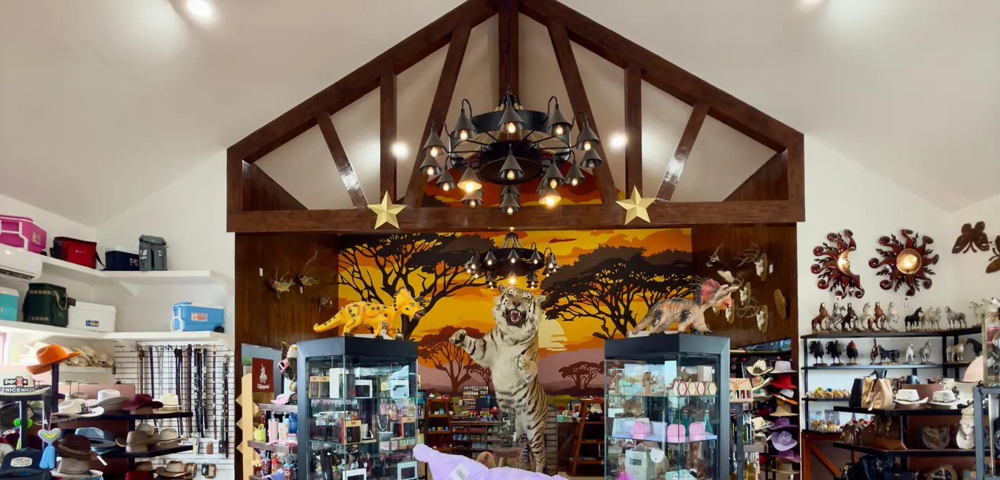
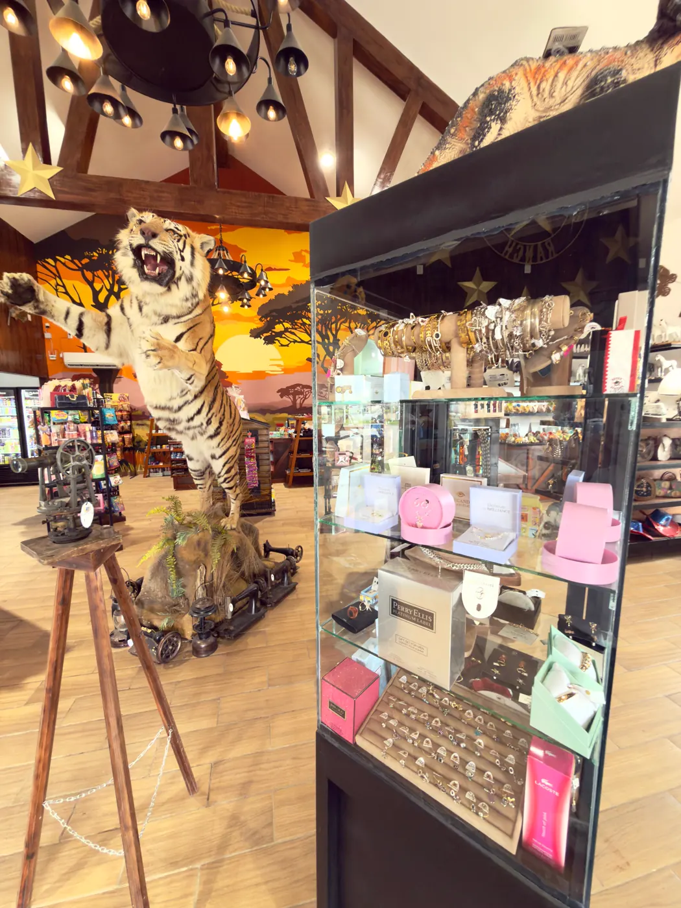

La nevera americana
Dr Pepper, Mountain Dew Baja Blast, A&W, Fanta, Prime, Celsius y Body Armor. Todo bien frío, todo listo para el camino.

Refrescos y botana americana que no encuentras en otro lado, sombreros vaqueros, bolsas de piel y un tigre de tamaño real en medio de la tienda. Botsy Station no es una parada más: es el motivo para desviarte.
Seis pasillos que valen la desviación. Y si nunca has entrado, prepárate: la tienda por dentro no se parece a nada de la zona.
Desliza para ver los seis

Dr Pepper, Mountain Dew Baja Blast, A&W, Fanta, Prime, Celsius y Body Armor. Todo bien frío, todo listo para el camino.

Palomitas Brim's de mantequilla, Cheese Balls, Lay's, Doritos, Pringles, Funyuns y pretzels Snyder's. De arriba abajo.

Hershey's Kisses y Hugs, Reese's, Airheads, Nerds, Starburst, Haribo, Swedish Fish, Feastables y Pop-Tarts.

Café de máquina, Buldak picante, Cheetos Mac'n Cheese, Maruchan y sopas instantáneas. Hay microondas para calentarlo en el momento.

Sombreros vaqueros, bolsas de piel y de cuero de vaca, cinturones y accesorios. Para llevarte algo que dure más que el viaje.

Victoria's Secret, Calvin Klein, Perry Ellis, Lacoste, joyería, tazas y peluches. Lo que nadie planea comprar y todos terminan cargando.

Botsy Station no se parece a la tienda de carretera de siempre. Techos altos con vigas de madera, candelabros hechos con ruedas de carreta, estrellas doradas y un mural de atardecer que cubre la pared del fondo.
Afuera te reciben un tipi, una carreta de época y un caballo a tamaño real. Adentro, un tigre parado a media tienda que se ha vuelto la foto obligada de todo el que pasa.

«Parada obligada.»
«No te lo puedes perder!!»
«Es un bonito lugar y venden cosas americanas, están sobre la carretera.»
Carretera Libramiento Manuel González
Altamira, Tamaulipas · C.P. 89613
Entrada directa desde la vía, ambos sentidos.